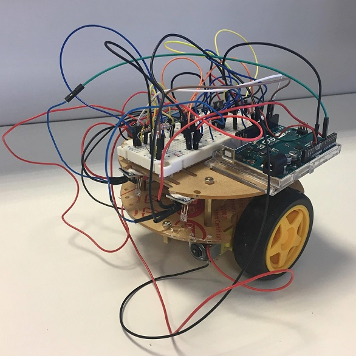
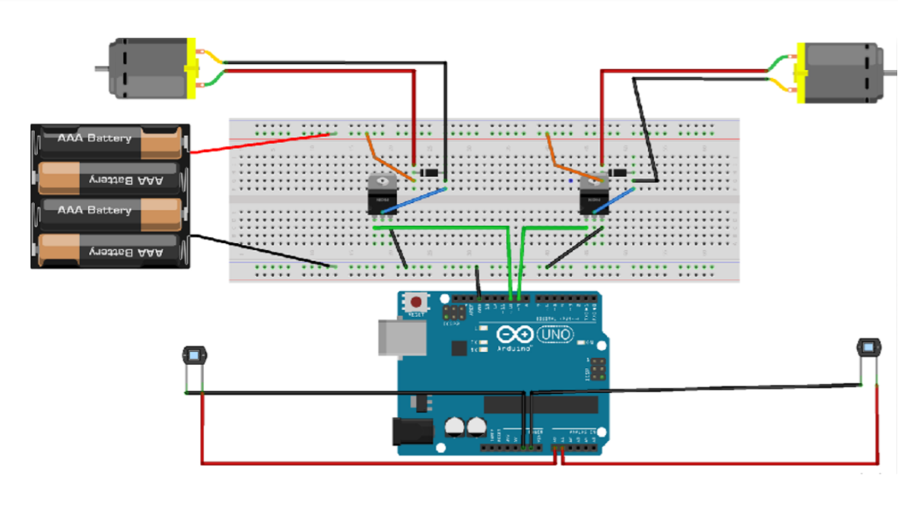

I built a model car capable of staying between 2 laser beams independently with my teammate Eliott.
I analyzed its trajectory thanks to a simulation of the car coded with Python.
To build the car we put an arduino microcontronller, an electronic circuit, and 2 photodiodes on a model car with 2 engines.
Here is the electronic circuit :

We have implemented the following code in the Arduino card.
int v ;
int ecart ;
int pinMoteur = 10;
int pinMoteur2 = 9;
int delai1;
int delai2;
bool bouton;
int vg;
int vd;
void setup() {
Serial.begin(9600);
ecart = 50;
v = 130;
vg = v;
vd = v;
delai1 = 1000; // la voiture tourne pendant delai1 ms
delai2 = 1000; // Quand la voiture a fini de tourner, elle a delai2 ms pour retourner entre les lasers
bouton = false; // false : la voiture est arrêtée; true : la voiture est en marche
}
void loop() {
Serial.print("Photodiode gauche : ");
Serial.print(analogRead(A0)); //lecture du CAN A0 connecté à la patte - de la photodiode
Serial.print("Photodiode droite : ");
Serial.print(analogRead(A1)); //lecture du CAN A1 connecté à la patte - de la photodiode
Serial.print("bouton :");
Serial.print(bouton);
Serial.print(analogRead(A2));
if (analogRead(A2) >= 1000)
{
bouton = not(bouton);
delay(500);
}
if (bouton)
{
analogWrite(pinMoteur, vg);
analogWrite(pinMoteur2, vd);
}
else
{
analogWrite(pinMoteur, 0);
analogWrite(pinMoteur2, 0);
}
if (analogRead(A0) >= 300)
{
digitalWrite(13, HIGH);
digitalWrite(12, LOW);
analogWrite(pinMoteur, vg - ecart);
analogWrite(pinMoteur2, vd + ecart);
delay(delai1);
analogWrite(pinMoteur, vg);
analogWrite(pinMoteur2, vd);
delay(delai2);
}
if (analogRead(A1) >= 300)
{
digitalWrite(12, HIGH);
digitalWrite(13, LOW);
analogWrite(pinMoteur, vg + ecart);
analogWrite(pinMoteur2, vd - ecart);
delay(delai1);
analogWrite(pinMoteur, vg);
analogWrite(pinMoteur2, vd);
delay(delai2);
}
}
According to this code, when the car encounters a laser, it turns during 1s, then goes straight during 1s. The 1st delay allows the car to turn enough to return between the 2 lasers. The 2nd delay allows the car to return between the lasers without being disturbed by the laser that illuminates the photodiode a second time during the turn.